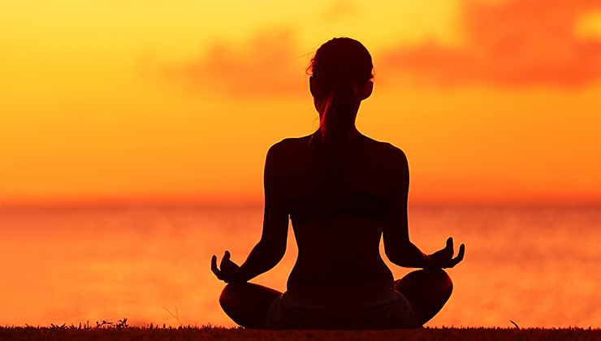

Медитація
Медита́ція — це практика, під час якої людина використовує такі техніки як уважність або фокусування розуму на певному об'єкті, думці чи діяльності.
Ціллю є тренування уваги, усвідомлення, та досягнення психічно ясного та емоційно спокійного та стабільного стану.
Медитація на антистрес
Ляжте і під розслаблену музику зосередьтеся на внутрішніх відчуттях в тілі або на шумі природи.
Ви можете візуалізувати, як перебуваєте десь в тихому місці, біля моря, океану чи в лісі.
За допомогою цього тіло розслабляється.
Медитація на усвідомленість
Одна із технік – зупинка думок. Потрібно сісти, розслабитися, зосередитися на тілесних відчуттях. Деяким людям краще зосереджуватися на якомусь зовнішньому об’єкті. Головна ціль – зосереджуватися доти, доки ми не перестаємо думати про що-небудь, тобто у нас зупиняється потік думок і ми переходимо до відчуттів.
Так людина потрапляє у глибокий трансовий стан, перезавантажується і відпочиває.
Ароматерапія
Використання ароматичних масел та запахів може мати релаксуючий вплив на психіку.
Ви можете вибрати аромати, які найбільше вам подобаються та сприяють вашому розслабленню.